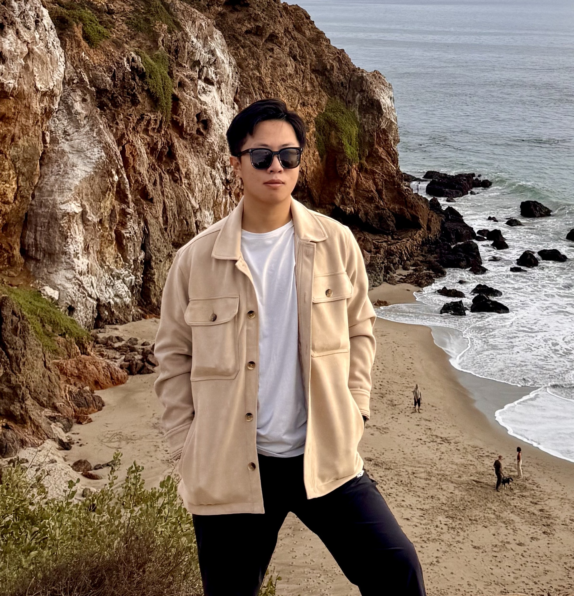

Dacheng Shen
Email: jasonshendc@gmail.com
Phone: +1 860-634-1461
LinkedIn: dacheng-shen
Location: Los Angeles, CA
🎓 Education
University of Southern California, M.S. in Computer Science
June 2024 - Dec 2025
University of Connecticut, B.S. in Computer Science (GPA: 3.65)
Sept 2020 - May 2024
Dean’s List Honors
💼 Experience
HICOCA Intelligent Equipment Technology
Software Development Engineer, Jul 2023 – Aug 2023
- Managed backend and server maintenance
- Updated framework, improved UI and performance
- Configured DB privileges and security
- Led UI development with 32% improved user satisfaction
📚 Projects
Comparative Narrative Analysis with Claude 3.7 (Mar 2025 – Present)
- Designed automated LLM evaluation pipeline
- Used Anthropic API, batched prompts, parsed JSON outputs
- Collaborated on bias-reducing evaluation metrics
OEM Controls Automated Angle Test for AS5 (Aug 2023 – May 2024)
- Led QA automation project for AS5 sensor
- Used Python + Ubuntu + Robot Arm APIs
- Reduced manual testing time by 67%
Student Admin Design (Sept 2023 – Dec 2024)
- Used Figma for UI/UX design
- Implemented frontend and backend integration
Food Ordering App (Aug 2021 – Nov 2021)
- Built Java-based invoice system
- Led GitHub-based team collaboration
🔧 Skills
- Languages: Python, Java, C, C++, SQL, HTML
- Tools: Git, AWS, Docker, Figma, Trello
- Technologies: RAG, Hugging Face, Web Crawling, OOP, Relational DB